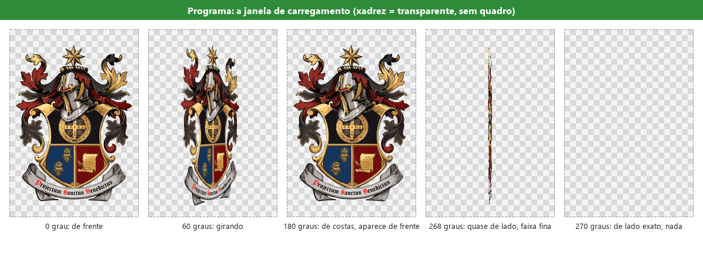
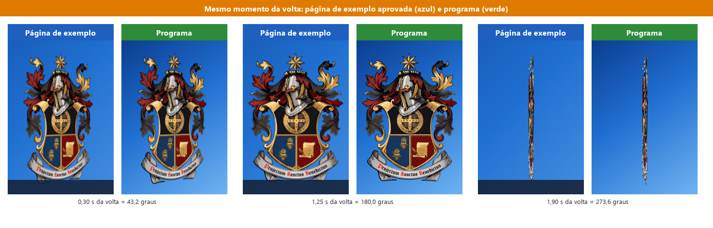
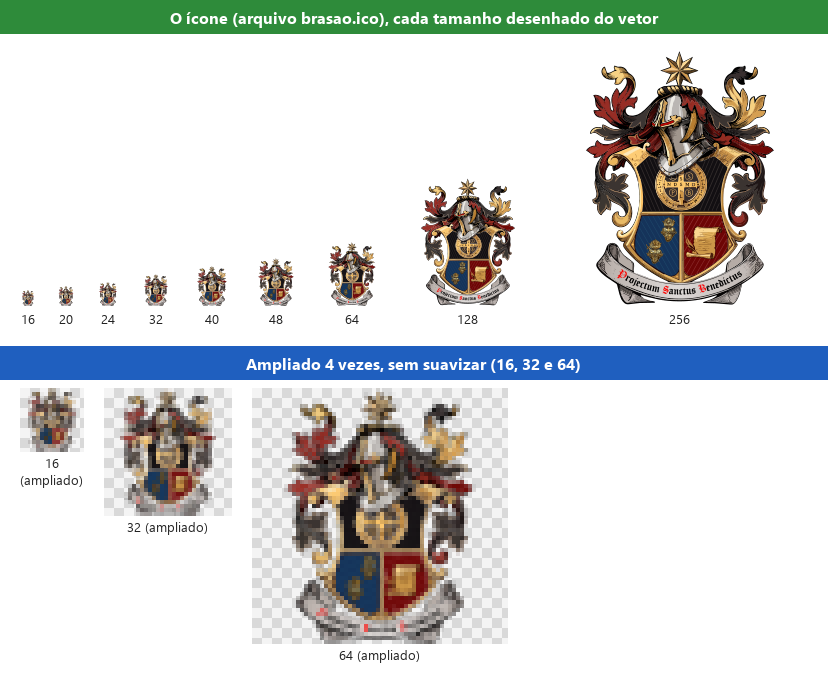
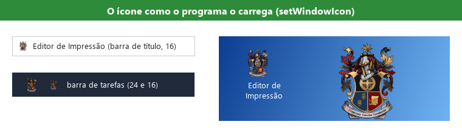

<!doctype html>
<html lang="pt-BR">
<head>
<meta charset="utf-8">
<meta name="viewport" content="width=device-width, initial-scale=1">
<title>Brasão girando e ícone</title>
<style>
:root { color-scheme: light dark; }
* { box-sizing: border-box; }
body {
  font: 17px/1.65 "Segoe UI", system-ui, sans-serif;
  max-width: 46rem; margin: 0 auto; padding: 2.5rem 1.5rem 6rem;
  color: #1c1c1e; background: #fdfdfc;
}
h1 { font-size: 2rem; line-height: 1.2; margin: 0 0 .3em; letter-spacing: -.02em; }
h2 { font-size: 1.35rem; margin: 2.4em 0 .6em; padding-top: .8em;
     border-top: 1px solid #e6e4e0; letter-spacing: -.01em; }
h3 { font-size: 1.1rem; margin: 1.8em 0 .4em; }
h1 + p, h2 + p { margin-top: .4em; }
p, li { margin: 0 0 .9em; }
ul, ol { padding-left: 1.3em; }
strong { font-weight: 640; }
code {
  font: .88em ui-monospace, "Cascadia Code", Consolas, monospace;
  background: #f1efec; padding: .12em .35em; border-radius: 4px;
}
pre {
  background: #f1efec; padding: 1em 1.1em; border-radius: 8px;
  overflow-x: auto; line-height: 1.5;
}
pre code { background: none; padding: 0; }
blockquote {
  margin: 1.2em 0; padding: .1em 0 .1em 1.1em;
  border-left: 3px solid #c9c5be; color: #55524d;
}
table {
  border-collapse: collapse; width: 100%; margin: 1.2em 0;
  font-size: .95rem; display: block; overflow-x: auto;
}
th, td { padding: .5em .8em; text-align: left; border-bottom: 1px solid #e6e4e0; }
th { font-weight: 620; background: #f7f5f2; white-space: nowrap; }
tr:last-child td { border-bottom: none; }
img { max-width: 100%; height: auto; border-radius: 6px; margin: 1em 0;
      border: 1px solid #e6e4e0; }
hr { border: none; border-top: 1px solid #e6e4e0; margin: 2.5em 0; }
.rodape { margin-top: 4em; padding-top: 1.2em; border-top: 1px solid #e6e4e0;
          font-size: .85rem; color: #86827c; }
@media (prefers-color-scheme: dark) {
  body { color: #e8e6e3; background: #1a1917; }
  h2 { border-top-color: #35332f; }
  code, pre, th { background: #262421; }
  th, td { border-bottom-color: #35332f; }
  blockquote { border-left-color: #4a4741; color: #b0aca6; }
  img { border-color: #35332f; }
  .rodape { border-top-color: #35332f; color: #7d7973; }
}
@media print {
  body { max-width: none; padding: 0; color: #000; background: #fff; }
  h2 { page-break-after: avoid; }
  table, img { page-break-inside: avoid; }
}
</style>
</head>
<body>
<h1>Brasão girando e ícone do programa — 17/11/2026</h1>
<p><strong>O que é:</strong> quando o programa abre, o brasão do projeto gira no meio da tela até a janela do programa aparecer. O ícone do programa (barra de tarefas, título das janelas, atalho, menu Iniciar, instalador) passa a ser o brasão. Feito como na página de exemplo que o Samuel aprovou (D-744 a D-747).</p>
<p>Situação: na cópia de trabalho <code>brasao-2026-11-17</code>, <strong>pronto para conferir</strong>. Ainda não está no programa que o Kaique recebe: o empacotamento é da etapa 5. Teste de máquina (os testes abaixo) e de olho (os prints).</p>
<h2>Como fica para quem usa</h2>
<ol>
<li>O Kaique clica no ícone do programa (agora o brasão).</li>
<li>Logo aparece o brasão girando no meio da tela: sem quadro e sem fundo, por cima do que estiver aberto. Dá uma volta a cada 2,5 segundos, como uma moeda. De costas aparece de frente outra vez, sem espelhar. De lado vira uma faixa fina.</li>
<li>Ele não aparece na barra de tarefas, não pega clique nem foco.</li>
<li>Quando a janela do programa aparece, o brasão some.</li>
<li>O PDF que sai não muda nada: nenhuma parte do processamento foi tocada.</li>
</ol>
<h2>Prints (feitos fora da tela, nada abriu na tela do Samuel)</h2>
<p>A janela de carregamento em cinco ângulos (o xadrez mostra onde ela é transparente):</p>
<p></p>
<p>O mesmo momento da volta, na página de exemplo aprovada (azul) e no programa (verde), sobre o mesmo fundo:</p>
<p></p>
<p>O ícone em todos os tamanhos, cada um desenhado do vetor (e ampliado 4 vezes, pixel a pixel):</p>
<p></p>
<p>O ícone como o programa o carrega, nos lugares do Windows:</p>
<p></p>
<h2>O que mudou e onde</h2>
<ul>
<li><code>arte/brasao/brasao.ai</code>: cópia do desenho original (<code>C:\Users\fotog\Desktop\Brasão 1.ai</code>), sem acento no caminho. Fica fora de <code>recursos/</code> para não ir dentro do programa.</li>
<li><code>brasao.py</code>: num lugar só, os caminhos e as medidas da página de exemplo (recorte, margem, tamanhos do ícone, 200 px de largura, perspectiva de 900 px, volta de 2,5 s).</li>
<li><code>gerar_brasao.py</code>: desenha do vetor, no tamanho final, o <code>recursos/brasao/brasao.ico</code> (16, 20, 24, 32, 40, 48, 64, 128 e 256) e as imagens do giro <code>recursos/brasao/giro-100.png</code> a <code>giro-300.png</code> (uma por escala de tela do Windows: 100%, 125%, 150%, 175%, 200%, 225%, 250%, 300%). Nada é desenhado grande para depois diminuir. O resultado está no git.</li>
<li><code>ui/brasao_girando.py</code>: a janela do brasão e o desenho do giro (a mesma conta do navegador da página de exemplo).</li>
<li><code>ui/tela_de_carregamento.py</code>: quando o brasão abre e fecha.</li>
<li><code>main.py</code>: abre o brasão no começo, antes dos imports pesados; fecha quando a janela principal aparece; põe o ícone em todas as janelas.</li>
<li><code>empacotar.py</code>: o ícone no <code>.exe</code> e nos atalhos (PyInstaller <code>--icon</code>) e no instalador do Velopack (<code>vpk --icon</code>).</li>
<li><code>instalador.iss</code> (o de reserva): <code>SetupIconFile</code> com o mesmo ícone.</li>
<li><code>tests/test_decisoes_brasao.py</code>: 19 provas novas.</li>
</ul>
<h2>Por que o brasão roda em outro processo</h2>
<p>O programa monta a janela principal na linha principal do Qt. Medido aqui: com o PC já aquecido, 0,4 s para carregar, 1,2 s para montar e 0,4 s para mostrar; na primeira vez depois de ligar, passou de 20 s. Nesse tempo um brasão no mesmo processo ficaria parado. Por isso ele roda num processo a parte (o mesmo programa, com outro argumento), que tem o laço do Qt só para ele e gira liso. O programa fecha esse processo quando a janela aparece; se o programa morrer antes, o brasão percebe sozinho e fecha; e há um limite de 3 minutos.</p>
<h2>Testes (cada arquivo sozinho, fora da tela)</h2>
<table>
<thead>
<tr>
<th>Arquivo</th>
<th>Resultado</th>
</tr>
</thead>
<tbody>
<tr>
<td><code>tests/test_decisoes_brasao.py</code> (novo)</td>
<td>19 passaram</td>
</tr>
<tr>
<td><code>tests/test_sem_janela_na_tela.py</code></td>
<td>8 passaram</td>
</tr>
<tr>
<td><code>tests/test_promessas.py -k "abrir or janela"</code></td>
<td>22 passaram (249 fora da seleção)</td>
</tr>
<tr>
<td><code>tests/test_empacotar.py</code></td>
<td>41 passaram</td>
</tr>
<tr>
<td><code>tests/test_empacotar_teste_velocidade.py</code></td>
<td>28 passaram</td>
</tr>
<tr>
<td><code>tests/test_decisoes_atualizacao.py</code></td>
<td>38 passaram</td>
</tr>
<tr>
<td><code>tests/test_decisoes_ajudante_da_atualizacao.py</code></td>
<td>37 passaram</td>
</tr>
<tr>
<td><code>tests/test_decisoes_testes_a_distancia.py</code></td>
<td>13 passaram</td>
</tr>
<tr>
<td><code>tests/test_botoes_em_portugues.py</code></td>
<td>5 passaram</td>
</tr>
<tr>
<td><code>tests/test_salva_sozinho.py</code></td>
<td>11 passaram</td>
</tr>
<tr>
<td><code>tests/test_decisoes.py</code></td>
<td>27 passaram</td>
</tr>
<tr>
<td><code>teste_botoes.py</code> (uma vez, fora da tela)</td>
<td>372 ações, 0 falhas</td>
</tr>
</tbody>
</table>
<p>Nenhum teste antigo foi mudado. A suíte inteira no GitHub não foi rodada (pedido sem push).</p>
<p>O que as provas novas cobram: o <code>.ico</code> tem os 9 tamanhos e cada um é, pixel por pixel, o vetor desenhado de novo naquele tamanho (e não o 256 diminuído); o brasão inteiro com margem transparente dos lados; o Qt lê os 9 tamanhos; o ícone vai para o <code>.exe</code>, o Velopack e o Inno; o giro faz a mesma conta do navegador da página, ponto por ponto; de frente o desenho é o vetor sem mudar um pixel, e fora dele nada (nem fundo nem sombra); de costas o quadro é igual ao de frente e diferente do espelhado; de lado vira faixa fina; a janela é sem moldura, transparente, por cima e fora da barra de tarefas; uma volta a cada 2,5 s; não aparece nos testes nem na conta dos testes à distância; um erro ao abrir nunca impede o programa; e, num <code>main()</code> de verdade fora da tela, o brasão está girando enquanto o programa carrega e some quando a janela principal aparece.</p>
<h2>Perguntas para o Samuel</h2>
<p><strong>1. A janelinha "Atualizando o programa" e o brasão aparecem juntos?</strong>
Isso acontece só numa abertura: quando chegou uma versão nova, o Kaique clicou "Depois" e agora abre o programa de novo. Primeiro aparece a janelinha "Atualizando o programa, espere um pouco..." enquanto a troca acontece. Quando o programa reabre, o brasão começa a girar, e a janelinha só some quando a janela do programa aparece. Por alguns segundos os dois ficam no meio da tela, um em cima do outro. Hoje está assim (não juntei os dois sem perguntar).
O que você escolhe:
- (sugiro) Quando o brasão aparece, a janelinha some na hora. Fica uma coisa de cada vez: primeiro a janelinha, depois o brasão.
- Os dois juntos, como está hoje.
- Na abertura da troca, só a janelinha; o brasão não aparece.
Nada do que já funciona muda em nenhuma das três.</p>
<h2>Ressalvas</h2>
<ul>
<li>Nada foi visto numa tela de verdade: pela regra, nenhuma janela abriu na tela do Samuel. A transparência real no Windows (sem fundo, sem sombra) está provada no desenho, fora da tela; falta o verificador olhar numa tela, ou a etapa 5.</li>
<li>O programa empacotado (<code>.exe</code>) não foi construído (é da etapa 5). Lá é preciso conferir: o <code>.exe</code> abre a segunda cópia dele mesmo para o brasão, o ícone aparece no <code>.exe</code>, nos atalhos e no instalador do Velopack, e o tempo até o brasão aparecer no notebook do Kaique.</li>
<li>Pelo código (atalho "(desenvolvimento)"), o Windows pode juntar o programa ao ícone do Python na barra de tarefas; no programa instalado vale o ícone do <code>.exe</code>.</li>
<li>Em 270 graus exatos não se desenha nada (o brasão está de lado), como na página de exemplo.</li>
<li>O ícone guarda os tamanhos até 128 no formato clássico do Windows e o 256 em PNG, que é o jeito do próprio Windows. O instalador de reserva (Inno) não foi compilado para conferir.</li>
<li>Numa escala de tela que não está entre as desenhadas (por exemplo 110%), usa-se a mais perto, e o Qt ajusta um pouco.</li>
<li>Na primeira vez, com o PC frio, o processo do brasão demorou mais para subir (um teste solto não viu ele fechar em 7 s; repetido três vezes, fechou em menos de 0,2 s depois do programa).</li>
</ul>
<hr />
<h1>Acréscimo de 17/11/2026 (tarde): a janelinha some quando o brasão aparece, e a pasta do Agendador</h1>
<h2>1. A janelinha "Atualizando o programa" some quando o brasão aparece (D-748, "Sim")</h2>
<p><strong>O que é:</strong> só na abertura em que a versão nova entra, depois do "Depois". Antes, a janelinha "Atualizando o programa, espere um pouco..." ficava na tela até a janela do programa abrir, e o brasão girava em cima dela. Agora a janelinha some na hora em que o brasão aparece, e os dois nunca ficam juntos.</p>
<p><strong>Como:</strong> uma regra só, a mesma marca de "programa aberto" que já fazia a janelinha sumir. O brasão põe essa marca antes de aparecer. Para garantir "nunca juntos", a janelinha segura uma marca dela do começo até fechar, e o brasão só aparece quando essa marca sumiu (no máximo 3 s). Cada um põe a sua marca antes de olhar a do outro.</p>
<p><strong>Onde:</strong> <code>atualizacao.py</code> (a marca da janelinha e quem a olha), <code>ui/brasao_girando.py</code> (<code>antes_de_mostrar</code>).</p>
<p><strong>Prova:</strong> <code>tests/test_decisoes_brasao.py</code>, três testes novos. O principal roda a janelinha de verdade (com a janela do Windows trocada por uma de mentira que anota a hora) e o processo do brasão de verdade, fora da tela. Ele confere que a janelinha fechou antes de o brasão aparecer. No código de antes ele falha: o brasão apareceu 19,9 s antes de a janelinha sumir.</p>
<p><strong>Efeito a mais:</strong> enquanto o brasão gira, o programa já conta como "aberto" para o ajudante da atualização, que então não troca os arquivos por baixo de um programa que está abrindo.</p>
<h2>2. A pasta vazia "EditorImpressao" no Agendador (D-731): feito, mas num ramo à parte</h2>
<p><strong>O que é:</strong> depois de desinstalar, a pasta vazia "EditorImpressao" ficava no Agendador de Tarefas do Windows. O último passo do desfazer passa a apagá-la, só se ficou vazia: nenhuma tarefa, nem escondida, e nenhuma subpasta. Se houver qualquer coisa, ela fica e o registro diz por quê.</p>
<p><strong>Onde:</strong> <code>core/testes_a_distancia.py</code>, no ramo <code>brasao-2026-11-17-pasta-agendador</code> (commit 0d41b711), <strong>fora do ramo principal</strong>.</p>
<p><strong>Por que à parte:</strong> o Windows só apaga pasta do Agendador pelo serviço dele, e um teste antigo se recusa, de propósito, a rodar qualquer comando que fale com esse serviço: <code>tests/test_decisoes_desinstalar.py::test_d731a_sem_os_testes_ligados_desinstalar_apaga_a_tarefa_da_atualizacao</code>. Com a pasta, esse teste antigo falha. Nenhum teste antigo pode mudar sem autorização, e burlar a proteção dele faria o teste mexer no Agendador de verdade do PC do Samuel.</p>
<p><strong>Conserto proposto para o teste antigo:</strong> a proteção dele passa a aceitar o serviço do Agendador só quando o teste dá um Agendador de mentira (o mesmo das provas novas). Nada que ele já confere muda.</p>
<p><strong>Prova:</strong> <code>tests/test_decisoes_desinstalar_pasta.py</code>, 6 testes (executor de mentira e Agendador de mentira). A pasta vazia sai; com tarefa ou subpasta, fica; sem a pasta, não dá erro. Cinco deles falham no código de antes.</p>
<p><strong>Pergunta:</strong> posso mudar a proteção desse teste antigo, como acima, e juntar o ramo? Sugiro que sim.</p>
<h2>Testes desta rodada (cada arquivo sozinho, fora da tela, no ramo principal)</h2>
<table>
<thead>
<tr>
<th>Arquivo</th>
<th>Resultado</th>
</tr>
</thead>
<tbody>
<tr>
<td><code>tests/test_decisoes_brasao.py</code></td>
<td>22 passaram (3 novos da D-748)</td>
</tr>
<tr>
<td><code>tests/test_decisoes_atualizacao.py</code></td>
<td>38 passaram</td>
</tr>
<tr>
<td><code>tests/test_decisoes_ajudante_da_atualizacao.py</code></td>
<td>37 passaram</td>
</tr>
<tr>
<td><code>tests/test_decisoes_desinstalar.py</code></td>
<td>46 passaram (no ramo à parte: 45 passaram e o teste antigo acima falhou)</td>
</tr>
<tr>
<td><code>tests/test_decisoes_testes_a_distancia.py</code></td>
<td>13 passaram</td>
</tr>
<tr>
<td><code>tests/test_sem_janela_na_tela.py</code></td>
<td>8 passaram</td>
</tr>
<tr>
<td><code>tests/test_decisoes_desinstalar_pasta.py</code> (ramo à parte)</td>
<td>6 passaram</td>
</tr>
<tr>
<td><code>teste_botoes.py</code> (uma vez, fora da tela)</td>
<td>372 ações, 0 falhas</td>
</tr>
</tbody>
</table>
<p>Nenhum teste antigo foi mudado. Para as provas no código de antes, criei a cópia <code>D:gente_temp_testesrasao2-antigo</code> (commit fd9f1f58, fora do projeto; não apaguei: a gerente decide).</p>
<p class="rodape">Editor de Impressão &middot; gerado em 17/11/2026 às 12:50</p>
</body>
</html>
